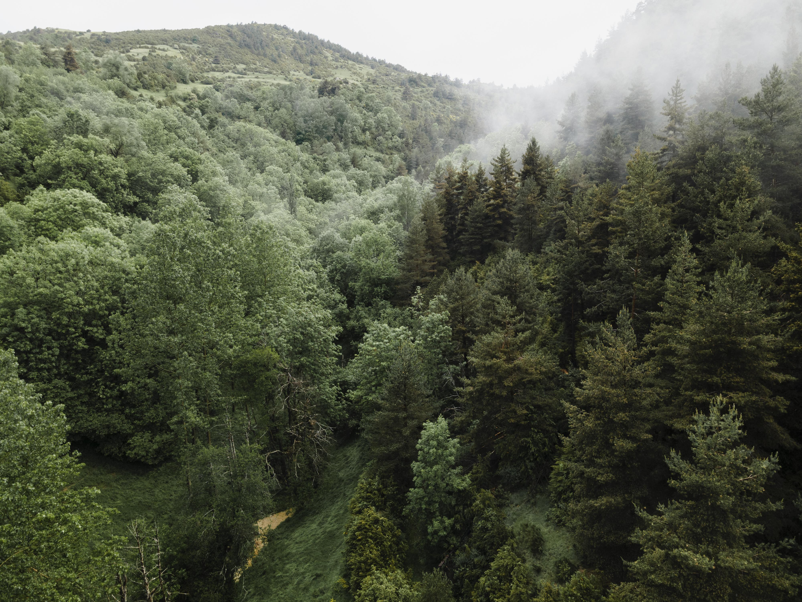

Забота о
ЛЕСЕ
Биобезопасность – забота о лесе
Мы обеспечиваем защиту леса от вредителей и болезней, проводим мониторинг и применяем современные методы сохранения биоразнообразия. Присоединяйтесь к нашим программам!
Читать далее
Помогите нам заботиться о лесах
Читать далееСвязи с общественностью и образование владельцев леса
Семинары для владельцев лесных участков: правильный уход, профилактика пожаров, законные вырубки.
Образовательные программы для школьников: уроки на природе, посадка деревьев, экологические квесты.
Публикации и брошюры: бесплатные материалы о лесных экосистемах, вредителях и способах защиты.
Дни открытых дверей: знакомство с работой лесничеств, экскурсии в питомники и заповедники.
Научные исследования: изучаем влияние климата на леса, ищем способы адаптации и сохранения редких видов.
Партнёрские программы: сотрудничаем с бизнесом для компенсации углеродного следа и восстановления лесов.

Советы по правильному использованию древесины
Используйте древесину с умом: выбирайте продукцию с сертификатом FSC, отдавайте предпочтение переработанным материалам.
Узнать больше


«Лес учит человека понимать прекрасное». – А.П. Чехов. Прогулка по лесу снижает стресс, улучшает настроение и вдохновляет на творчество.

Лесная фауна
и охота
Мы выступаем за разумное регулирование охоты и сохранение мест обитания редких животных. Поддерживайте проекты по защите медведей, рысей и птиц.
подробнееЛес
Леса покрывают 30% суши и являются лёгкими планеты. Они дают нам кислород, чистую воду и древесину.
→
Забота о лесе на благо природы и людей
Биобезопасность
Защита от вредителей и болезней – основа устойчивости лесов. Мы внедряем карантинные меры и биологические методы борьбы.
Узнать большеДикая природа
В наших лесах обитают лоси, кабаны, зубры. Сохраняя лес, мы сохраняем их дом.
Узнать большеЛюди
Местные сообщества – главные хранители леса. Поддерживаем экотуризм и традиционные промыслы.
Узнать большеЭкология
Лес регулирует климат, очищает воздух и воду. Каждое дерево – это маленькая фабрика жизни.
Узнать больше
Самые красивые леса
«Я объявляю этот мир таким прекрасным, что почти не верю, что он существует». Красота природы может глубоко влиять на наши чувства, открывая путь от внешнего мира к внутреннему...

Четыре простых шага для безопасности в лесу с собакой
Не отпускайте питомца с поводка в незнакомом месте. Обрабатывайте от клещей до и после прогулки. Берите воду и миску – ручьи могут быть опасны. Убирайте за собакой, чтобы не нарушать экологию.